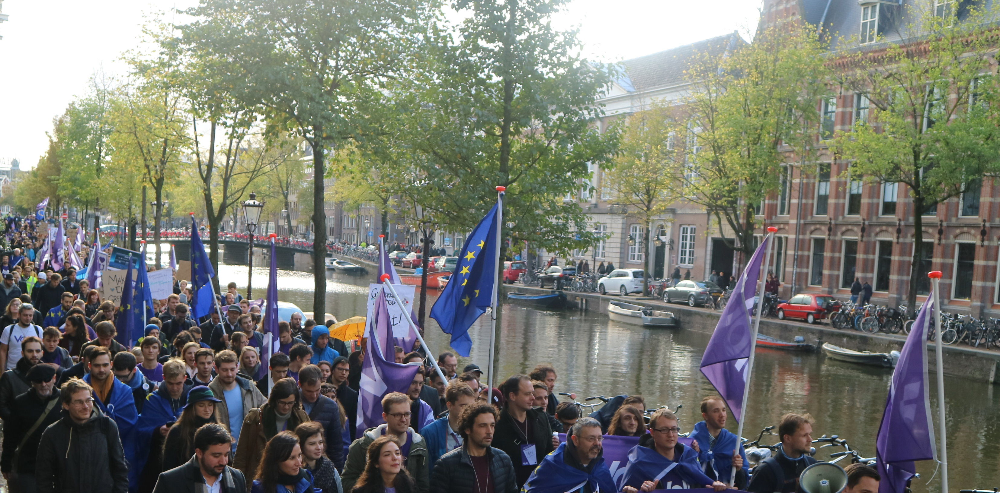

Politics

I am politically active for the pan-European movement and political party Volt Europa, which stands on a common platform for its pragmatic and progressive values all over Europe.
This is because I believe, that the great crises and challenges of our time could much easier be conquered in cooperation instead of using isolated efforts by small, independent nations. I also want to see Europe's position on world stage strengthened through greater cohesion, in order to have the union become an effective force for democracy and human rights globally.
I joined Volt in May of 2019 and have taken up some responsibilities within the party since January 2020, doing voluntary work as Volt Europa's Discord Lead, a member of Volt Nederland's design team and local Communications Lead of Volt Groningen.
In case you are interested in a better functioning and more united Europe as well, or you just want to know some good reasons for it, check out the links below!
I wrote a short story about how this helped me gain skills relevant to game design. You can check it out by clicking the following link.